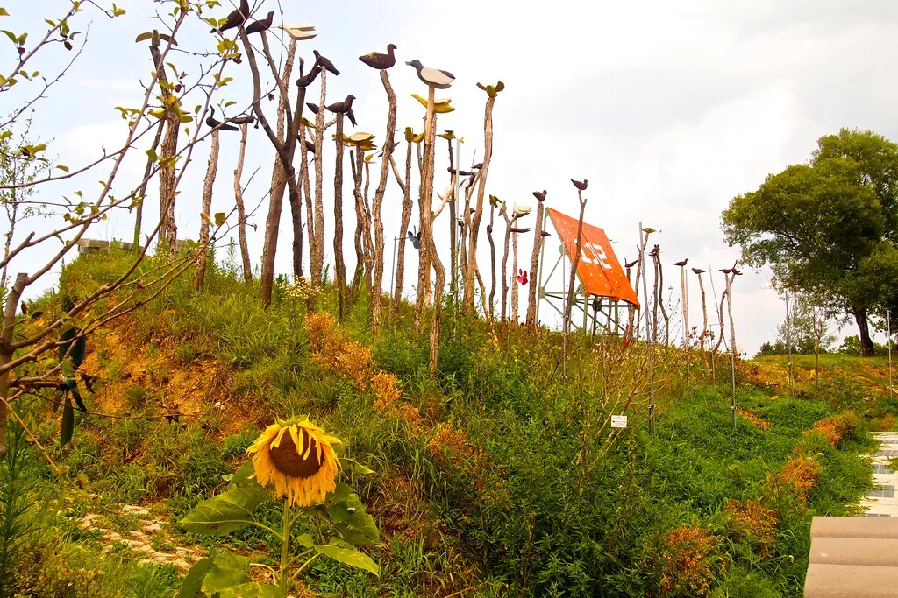

여야, DMZ 지뢰 규탄 결의안 놓고 충돌…유엔 대응도 공방
14일 국회 국방위원회에서 열린 국정감사에서 여야가 북한의 비무장지대(DMZ) 지뢰 폭발 사고를 규탄하는 결의안 처리를 놓고 다시 충돌했다. 여야는 각각 별도의 규탄 결의안을 국방위에 제출했지만 문구를 놓고 좀처럼 간극을 좁히지 못하고 있다. 국민의힘은 결의안 내용을 보완해야 한다는 입장을 고수하고 있고, 더불어민주당은 더 이상 지체할 이유가 없다며 조속한 채택을 촉구하고 있다. 이번 충돌은 지난달 말부터 이어져 온 지뢰 폭발 사고 관련 공방이 국정감사를 거치며 다시 수면 위로 떠오른 모양새다.
국방위는 지난 7일 두 결의안을 법안심사소위원회로 넘겨 심사를 진행해왔지만, 세부 문구를 둘러싼 이견으로 채택이 계속 미뤄졌다. 이날 국정감사에서도 여야 간사가 소위를 다시 열어 위원회 대안을 마련하고, 이를 본회의 표결에 올리겠다는 방침을 밝혔다. 다만 양측이 강조하는 지점이 서로 다른 만큼 실제 처리 시점은 유동적이라는 관측이 나온다. 결의안 하나를 두고 일주일 넘게 합의에 이르지 못한 점을 두고 여야 모두에 대한 피로감을 제기하는 목소리도 있다.

이번 갈등의 배경에는 지난달 DMZ 일대에서 발생한 지뢰 폭발 사고가 있다. 합동참모본부는 사고 직후 현장 조사를 거쳐 폭발물에서 TNT와 RDX 성분이 검출됐다며 북한이 매설한 지뢰로 결론을 내렸다고 발표했다. 이후 사고 경위와 군의 초기 대응이 충분했는지를 놓고 여야 간 책임 공방이 이어져 왔고, 이번 규탄 결의안 처리 역시 그 연장선에 있다. 사고 원인을 둘러싼 1차적 논쟁은 정리됐지만, 후속 대응과 재발 방지책을 둘러싼 2차 공방은 오히려 길어지는 양상이다.
이날 국정감사에서는 유엔 차원 대응이 적절했는지도 새로운 쟁점으로 떠올랐다. 야당 의원들은 북한의 도발을 유엔 안전보장이사회에 제기하지 않은 이유를 집중적으로 따져 물었다. 이에 차지훈 주유엔대사는 안보리 회부를 포함해 "앞으로 어떻게 접근할지는 아직 미정"이라고 답했고, 유엔총회 산하 위원회에서의 발언 등도 나름의 정당한 대응 수단이 될 수 있다고 설명했다. 야당 의원들은 안보리 회부가 늦어질수록 국제사회에 보내는 메시지도 약해질 수밖에 없다고 재차 지적했다.
여야의 공방 구도는 비교적 뚜렷하다. 야당은 국방부가 사고 조사를 더디게 진행하고 후속 조치도 미흡했다고 비판하는 반면, 여당은 근거 없는 음모론과 안보 흠집내기가 오히려 군에 대한 신뢰를 흔들고 있다고 맞받고 있다. 양측은 사고의 사실관계 자체보다는 정부와 군의 대응 방식을 둘러싼 정치적 책임 소재에 더 무게를 두고 있는 모습이다.
이 사안은 올해 가을 국정감사에서 다뤄진 여러 안보 현안 가운데서도 비중이 큰 쟁점으로 꼽힌다. 지뢰 폭발 사고 자체는 지난달 말 북한 소행으로 결론이 났지만, 재발 방지책이나 국제사회에 대한 대응 전략을 두고는 아직 여야가 공유하는 그림이 뚜렷하지 않다. 국방위가 이날 처리를 목표로 삼았던 만큼, 결의안이 실제로 본회의까지 올라갈 수 있을지가 단기적인 관심사로 남아 있다.
전문가들은 군사분계선 인근에서 벌어진 사고인 만큼 정확한 원인 규명과 함께 재발 방지를 위한 실질적 조치가 병행돼야 한다고 지적한다. 다만 여야가 결의안 문구 하나를 두고도 수 주째 합의를 이루지 못하는 상황이 반복되면서, 안보 현안에 대한 국회의 초당적 대응 능력에 대한 우려도 함께 커지고 있다. 이번 국정감사가 마무리되기 전까지 결의안 채택 여부가 가려질지 주목된다.